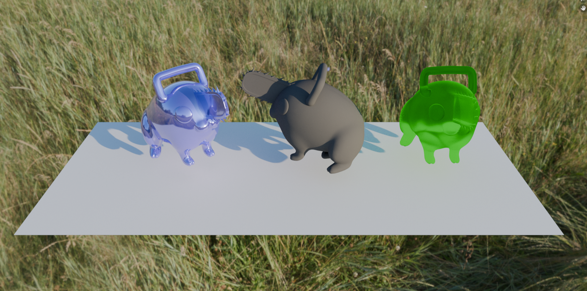

Glass sphere and cube, mirror sphere and cube.

Material 1: This material resembles a less reflective metal. I increased the roughness, making it less like a mirror and added a distinct color to it. It now exhibits a more subdued and diffuse reflection.
Material 2: Material 2 simulates concrete, and it is exceptionally matte with maximum roughness. This means it has a very dull and non-reflective surface. I also made it grey to match real concrete.
Material 3: Material 3 mimics sea glass, similar to regular glass but with some extra roughness. This additional roughness gives it a unique texture, making it appear as if it has been weathered by the ocean, resulting in subtle imperfections on the surface.